As a budding photographer, I had always been interested in portrait photography, but it wasn't until a close friend took a photo of me
that I truly fell in love with the art form. At the time, I had just begun my transition and struggling with self-doubt and absolutely hated my body.
My friend was able to capture a side of me that I had never seen before, her photo helped me see myself
through the eyes of others. This newfound perspective gave me a confidence that I gravely needed, and I realized the power that just a single photograph
can have in helping someone feel seen, accepted, and beautiful. From that moment on, I made it my mission to capture and showcase the beauty that all people
have, even if they can't see it themselves.
Rustic: 9-20-2022
An old ford truck I came across in the University of Texas-North Campus area. The lack of acceptance in the car community has made it hard to appreciate cool old
cars and trucks like this one.
Portraits: 8-18-2022
Taken during my first anniversary on hormones. One of the happiest memories of my life, surrounded by my closest friends and my chosen family.
I'm glad I took the time to document my party as looking back at these photos
I'm still able to relive the day.
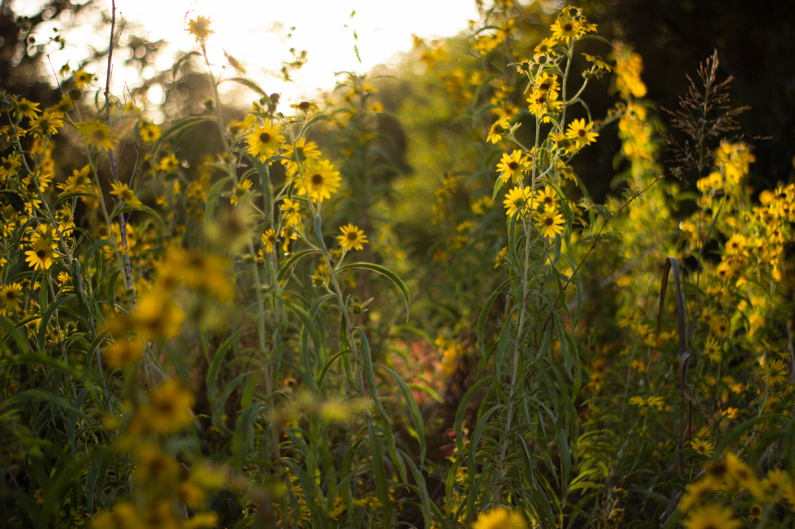
Flowers: 10-19-2022
A beautiful landscape of sunflowers: a stunning yet common view with my own spin on it.
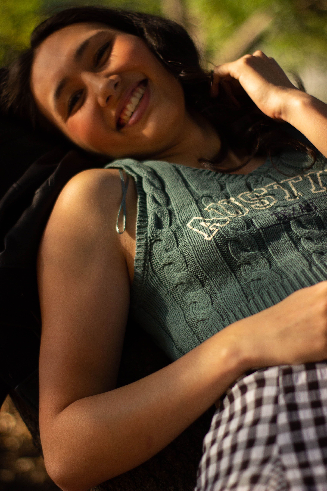
Portraits: 10-19-2022
Taken at Auditorium shores right across the river from downtown austin. Austin is a beautiful safe haven for those of us who aren't safe in the rest of Texas.
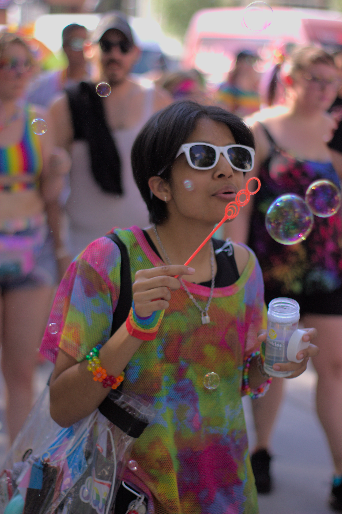
Pets: 10-23-2022
A photo depicting a distinguished gentleman on his best behavior.
Flowers: 10-19-2022
One of my favorite photograhs despite the subject being relatively generic, I feel I brought a unique perspective to this photo that I haven't seen before.
Pride: 6-25-2022
Taken at Houston's Pride Parade. A quick portrait of my closest friend at our first pride! I wouldn't have wanted to attend my first pride with anyone else! We had an absolutely incredible time.
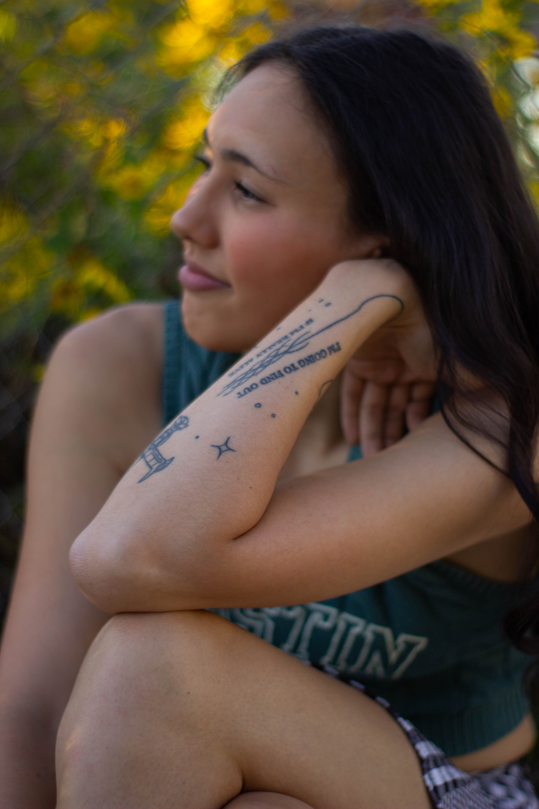
Portraits: 10-19-2022
Another stunning portrait of a friend of mine at Auditorium Shores in Austin, Texas.
Pets: 12-23-2022
A savage portrait of my sister's dog. I wanted to show his beauty as well as his strength to create a stunning contrast for this portrait.
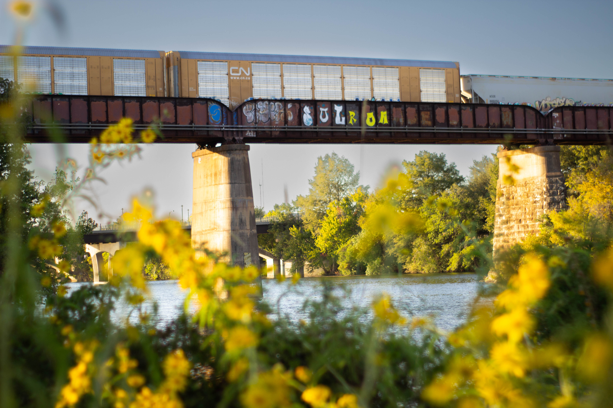
Landscapes: 10-19-2022
A stunning landscape image of a frieght train crossing a bridge from downtown Austin.
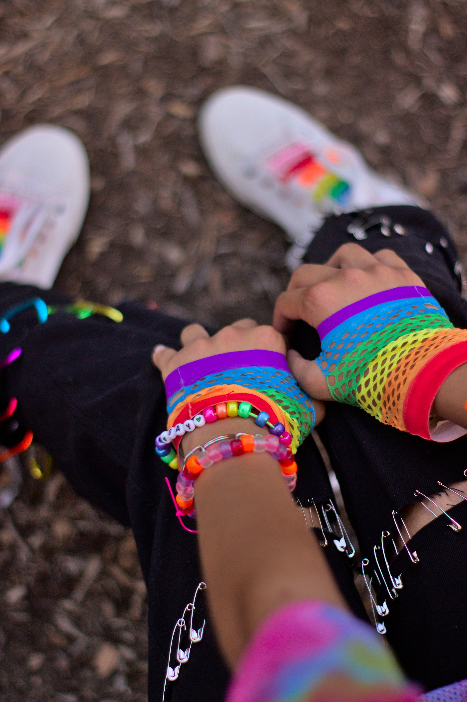
Pride: 6-25-2022
A closer look at my friend's incredible outfit for the pride parade.
Headshots: 11-12-2022
A fantastic example of the kinds of headshots I take. I prefer outdoor settings with real smiles and actual posing as opposed to the lifeless corporate headshots
most photographers take. Headshots are meant to show YOU off, it's important to stand out with a stunning portrait.
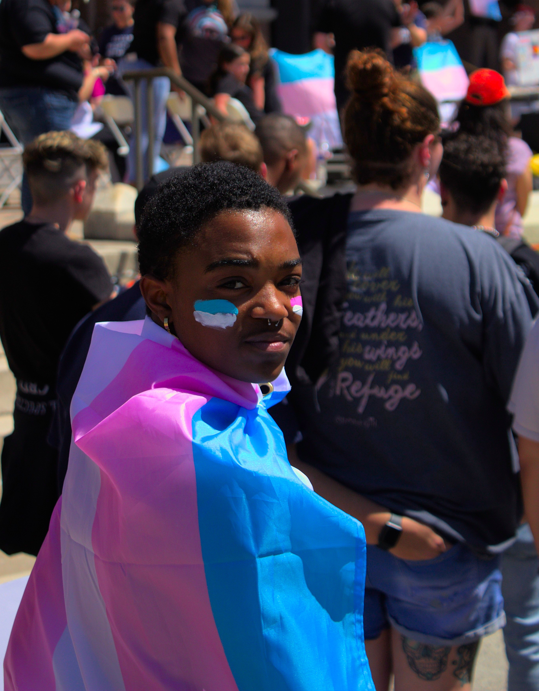
Pride: 4-2-2022
My friend Noah, wrapped in their transgender flag, who I met for the first time just after taking his photo. Photography is a fantastic way to meet new people.
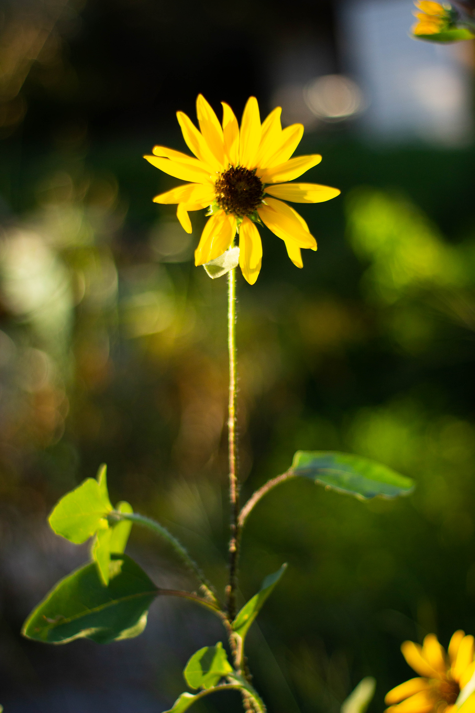
Flowers: 9-20-2022
A lone sunflower baked in sunlight.
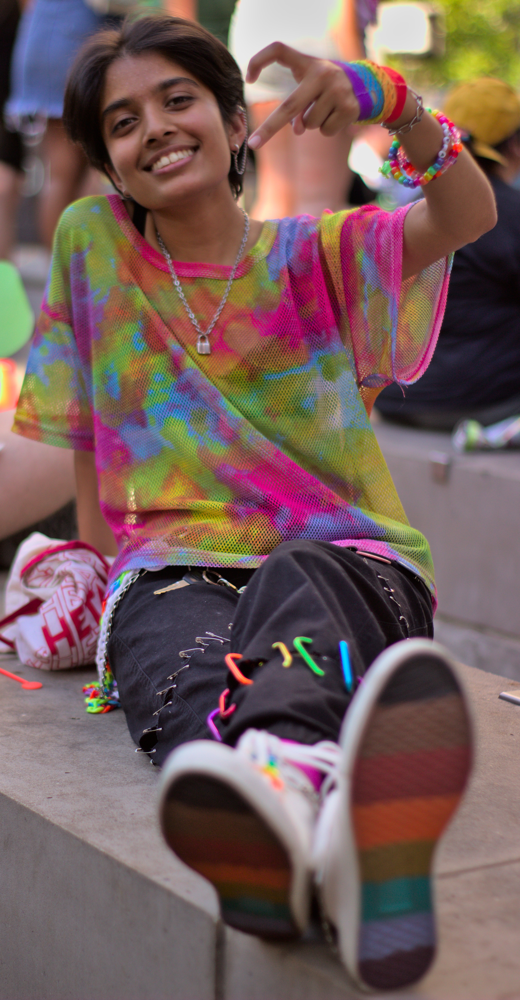
Pride: 6-25-2022
Taken at Houston's Pride Parade. My closest friend and I's first pride, we had an incredible time even though we had to put up with Houston's lovely excruciating heat.
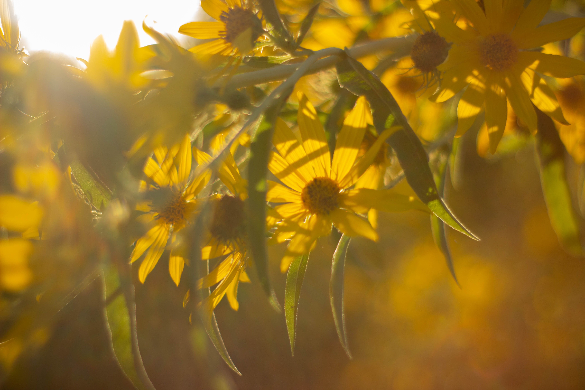
Flowers: 10-19-2022
Hazy sunflowers with light sifting through their petals. An absolutely gorgeous day in Austin for photography.
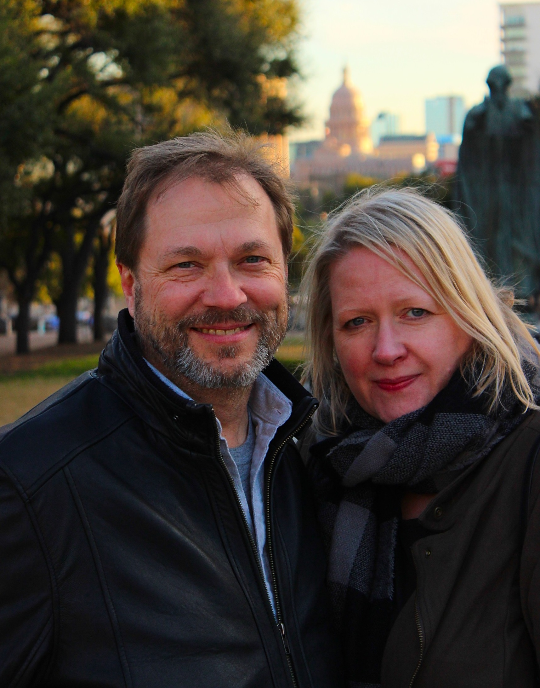
Portraits: 2-12-2022
A portrait of my parents showing off the beautiful Texas capital.
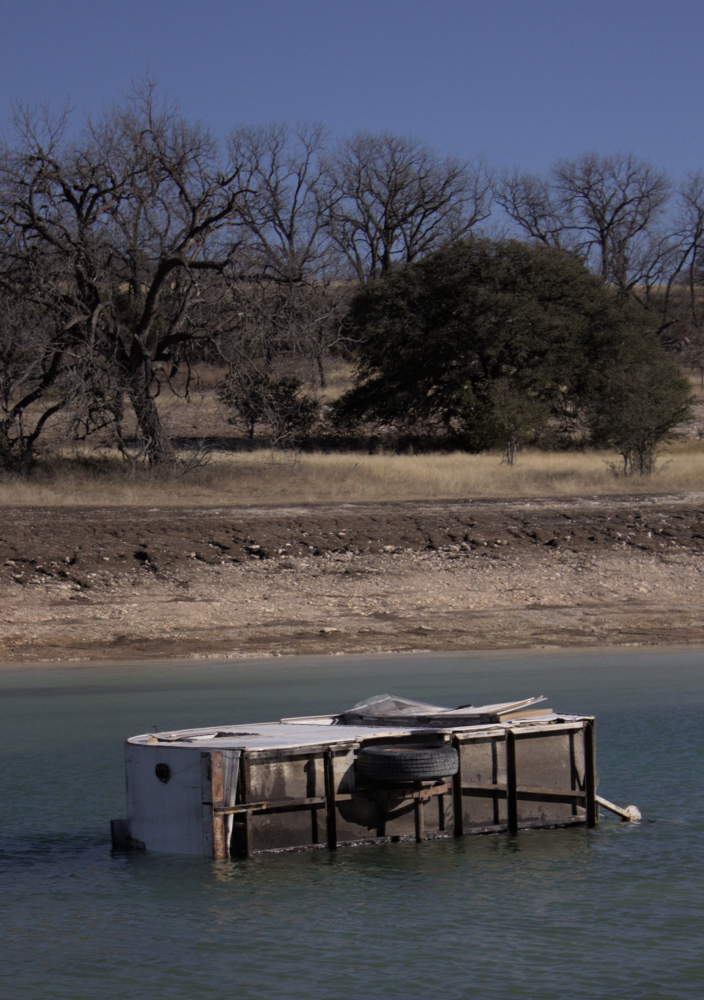
Rustic: 2-19-2022
A sunken camper van on my friend's family's ranch used as a home for the fish living in their pond. Such a beautiful metaphor for bringing life with the death of an object.
Rustic: 10-19-2022
I'm a huge fan of rustic looking scenery like this, something about wood textures and greenery create a sense of nostalgia and comfort in me.
Pets: 4-22-2022
Here's an adorable photo of my friend's dog, Charlie. He's just a little guy <3
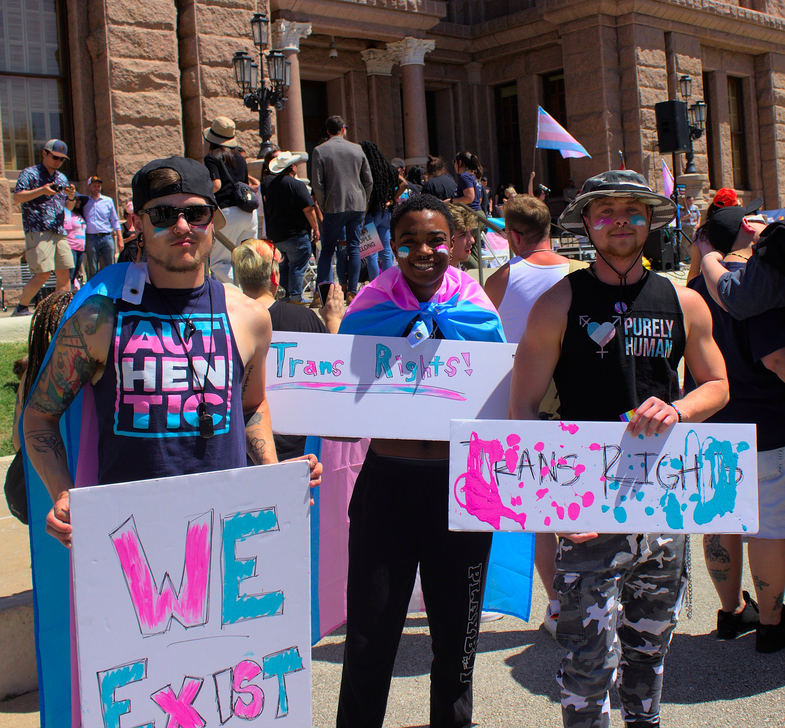
Pride: 4-2-2022
I attended a transgender rights rally outside the Texas Capital in Austin, and met some incredible friends, who I'll never forget!!
Love: 3-25-2022
I saw this bachlorette group taking photos at the Oasis and offered to take a photo for them. Unfortunately, they didn't write down my number properly or forgot to reach out,
so I was never able to give them their photos!